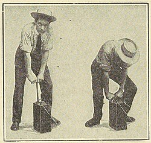

ブレインストーミング：発破器から「自転車ハブダイナモを用いた三相交流」への転換
私たちの班では、課題研究のテーマ決定にあたり、まず授業内において班員全員でのブレインストーミングを実施しました。
最初のアイデア出しでは、強いエネルギーを瞬間的に生み出す「発破器」の製作案が立案されました。しかし、「なぜその構造にするのか」「どのように効率を高めるか」といった学術的なアプローチについて議論を深めるうち、研究として深く掘り下げるための内容（検証要素）が乏しいという重大な課題に直面し、一度計画をリセットすることにしました。

💡 現実的な課題解決と「余った自転車」の活用
そこで、議論の視点を「単に電気を作る」ことから「発電機から住宅（消費場所）までの送電・活用過程をミニチュアサイズで再現する」という、より社会インフラに近いシステムの研究へとシフトさせました。 その際、班員から「使わずに余っている自転車がある」という具体的なアイデアが上がり、これを用いた「自転車による三相交流発電の再現」に挑むことが決定しました。
⚙️ 「自作」から「ハブダイナモの採用」への設計変更
当初の設計案では、コイルと磁石を自分たちで巻き、発電機自体のフルスクラッチ（自作）を行う予定でした。しかし、限られた活動期間内での「設計の緻密さ」「作成の複雑さ」「失敗リスク」を徹底的にディスカッションした結果、発電機そのものを作るのではなく、身近に存在する非常に優秀な交流発電機である「自転車のハブダイナモ」をそのまま採用する方針へ切り替えました。これは、ハブダイナモが内部に交流発電の仕組みを綺麗に備えているため、研究の焦点を「発電機内部の微細な調整」から「送電・活用システムとしての効率化」に集中させるための合理的な判断でした。
🌍 社会に役立つ要素との紐づけ：災害時の活用
このテーマを学術的な研究にとどめず、より社会貢献性の高い要素と紐づけたいと考え、最終的な研究の主軸を「災害時に役立つ身近なものを使った効率的な交流発電機および送電システムの検証」として策定しました。
実験を進めるにあたっては、最初から難易度の高い三相交流に挑むのではなく、まずは「単相交流発電」の再現と評価から段階的にアプローチするというクリアな手順を設定し、班全員の共通認識としました。
■ 私たちの班のテーマ変遷・アプローチロードマップ
掘り下げる検証内容が少なく断念
期間と作製プロセスの複雑さから見直し
単相から三相交流への段階的アプローチ